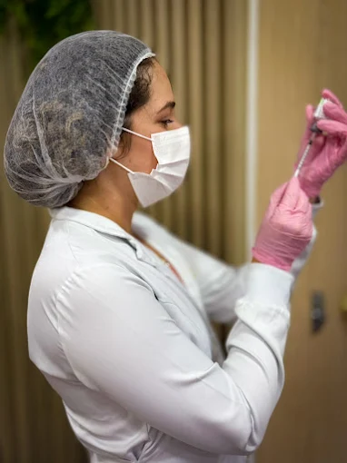
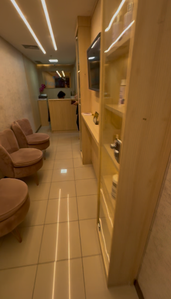

Preenchimento facial
Harmonização e valorização de pontos do rosto conforme avaliação individualizada.
Cada atendimento é pensado de forma individual, unindo técnica, bem-estar e uma experiência acolhedora em Salvador.

O Instituto Luana Sampaio trabalha com uma abordagem personalizada, respeitando características, objetivos e necessidades de cada pessoa. A proposta é oferecer procedimentos estéticos com segurança, harmonia e cuidado em cada etapa.
Clínica de estética avançada em Salvador, localizada no Mundo Plaza, com foco em procedimentos personalizados, atendimento humanizado e valorização da beleza natural.
O plano de cuidado é definido após avaliação individualizada. Conheça algumas das áreas atendidas pelo Instituto.
Harmonização e valorização de pontos do rosto conforme avaliação individualizada.
Voltado à harmonia dos lábios, respeitando proporção, naturalidade e características individuais.
Protocolos estéticos conforme avaliação profissional, com foco em suavização e cuidado personalizado.
Indicado conforme análise individual, buscando sustentação e harmonia facial.
Protocolos personalizados para cuidado da pele de forma gradual e responsável.
Planejamento estético global, considerando harmonia, proporção e naturalidade.
Cuidado essencial para saúde e aparência da pele, com orientação personalizada.
Atendimento corporal voltado ao bem-estar, conforme necessidade individual.
Protocolos personalizados para cuidados corporais, sempre mediante avaliação.
Uma conversa atenta desde o primeiro contato.
Indicações respeitam o momento e as características de cada pessoa.
Ambientes preparados para uma experiência confortável.
WhatsApp como caminho simples para informações e agendamentos.
A página atual já apresenta o Instituto. Uma estrutura própria permite organizar melhor as informações, melhorar a experiência no celular e fortalecer a presença no Google.
As avaliações reforçam a experiência positiva de quem já conheceu o atendimento do Instituto Luana Sampaio.
Um endereço central para receber você com conforto e atenção.
Condomínio Mundo Plaza
Av. Tancredo Neves, 620 · Sala 403
Caminho das Árvores · Salvador — BA
CEP 41820-020

O Instituto fica no Condomínio Mundo Plaza, Av. Tancredo Neves, 620, Sala 403, Caminho das Árvores, Salvador — BA.
O Instituto atua com procedimentos faciais e corporais, como preenchimento facial e labial, botox, fios, rejuvenescimento facial, full face, limpeza de pele, drenagem linfática e tratamentos corporais.
Cada procedimento depende de avaliação individualizada.
Sim. O atendimento considera características, objetivos e necessidades individuais.
Use qualquer botão “Agendar WhatsApp” desta página para falar diretamente com o Instituto.
Não. Os resultados podem variar conforme cada pessoa, indicação, organismo e cuidados recomendados.
Não. O conteúdo deste site é informativo e não substitui uma avaliação profissional presencial.
Fale pelo WhatsApp e saiba mais sobre procedimentos, horários e localização.